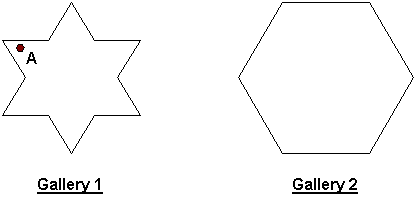

Problem D
The Art Gallery
Input: standard input
Output: standard output
Century Arts has hundreds of art galleries scattered all around the country and you are hired to write a program that determines whether any of the galleries has a critical point. The galleries are polygonal in shape and a critical point is a point inside that polygon from where the entire gallery is not visible.
For example, in gallery 1 (drawn below) point A is a critical point, but gallery 2 has no critical point at all.

The Century Arts authorities will provide you with the shape of a gallery as a sequence of (x, y) co-ordinates (determined using a suitable origin) of the consecutive corner points of that gallery.
Input
The input file consists of several data blocks. Each data block describes one gallery.
The first line of a data block contains an integer N (3 £ N £ 50) indicating the number of corner points of the gallery. Each of the next N lines contains two integers giving the (x, y) co-ordinates of a corner point where 0 £ x, y £ 1000. Starting from the first point given in the input the corner points occur in the same order on the boundary of the gallery as they appear in the input. No three consecutive points are co-linear.
The input file terminates with a value of 0 for N.
Output
For each gallery in the input output the word "Yes" if the gallery contains a critical point, otherwise output the word "No". Each output must be on a separate line.
Sample Input
4Sample Output
No